Dominio
En un Dominio se almacena de forma centralizada infor-mación administrativa (cuentas de usuarios, impresoras, directorios, etc.) y de seguridad, facilitando así la labor del administrador. Windows Server utiliza el concepto de Directorio Activo (AD, Active Directory) como almacén de datos (objetos) para implementar este tipo de configuración.
El DA es un servicio de red que guarda en una base de datos toda la información sobre los recursos de la red y permite el acceso de los usuarios a dichos recursos y a determi-nadas aplicaciones.
Cuando instalemos un DA en uno o varios equipos Win-dows Server de nuestra red, convertimos a dichos equipos en servidores o, más correc-tamente, en los denominados controladores de dominio (Domain Controllers).
Instalacion de controlador de dominio
Paso 1
Configurar nombre servidor Windows
Ahora vamos a modificar el nombre del servidor. El primer paso es modificar el nombre del equipo ya que este será el identificador en la red y si está con el nombre predeterminado será complicado para muchos usuarios ubicarlo de forma fácil.
Podemos usar las siguientes alternativas para modificar el nombre:
- Desde el administrador del servidor: Allí nos dirigimos a la opción Servidor local y allí damos clic sobre el nombre del servidor
- Usando la opción Sistema: Para ello damos clic derecho sobre el botón de Inicio, seleccionamos la opción Sistema y allí elegimos: Configuración avanzada del sistema > Nombre de equipo
Ahora debemos ver el cambio de nombre por el que asignamos en este ventana:
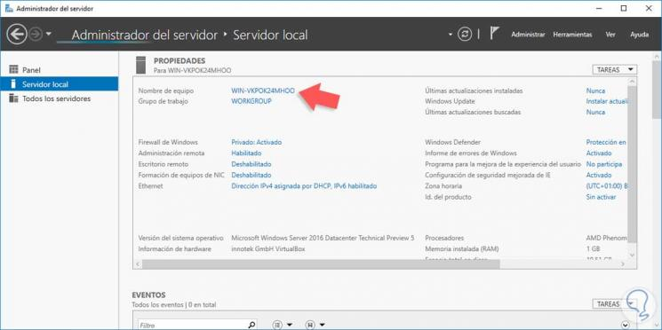Paso 2
Cambiar la dirección IP del servidor
Es necesario que el equipo cuente con una dirección IP estática para la estabilidad de la red ya que una dirección IP dinámica puede afectar la conectividad entre los equipos y el dominio.
- Ir a la ruta Panel de control / Redes e Internet / Centro de redes y recursos compartidos / Cambiar configuración del adaptador.
- Dando clic derecho en el ícono de red ubicado en la barra de tareas y allí seleccionar la opción Centro de redes y recursos compartidos, posteriormente seleccionar la opción Cambiar configuración del adaptador.
Una vez configurados el nombre y la dirección IP del servidor procedemos a instalar los roles respectivos. Instalando el rol de directorio activo. El primer paso es instalar el rol de Servicios de dominio de Active Directory y para ello realizaremos el siguiente proceso.
Desde el Administrador el servidor seleccionamos la opción Agregar roles y características donde veremos el siguiente asistente, que nos indica que debemos comprobar que se han completado las siguientes tareas previas:
- La cuenta administrador tiene una contraseña segura.
- Las direcciones IP como las direcciones de red estáticas, están configuradas.
- Las actualizaciones de Windows Update están instaladas.
Pulsamos Siguiente para elegir el tipo de instalación la cual será la que está seleccionada por defecto: “Instalación basada en características o en roles”.
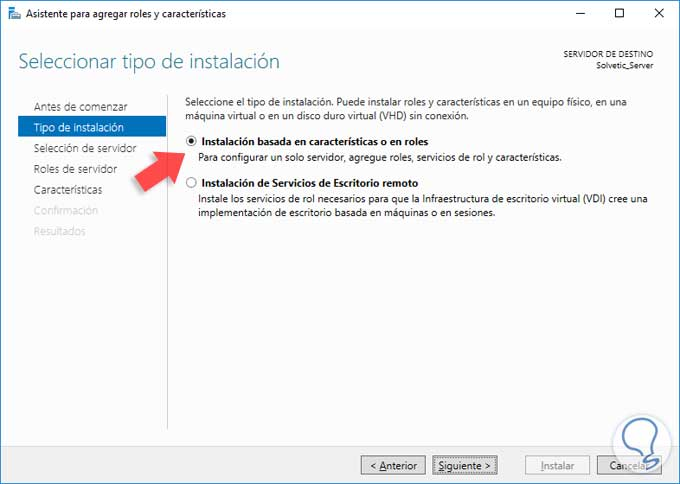Pulsamos Siguiente y en la siguiente ventana seleccionamos el servidor donde instalaremos el rol.
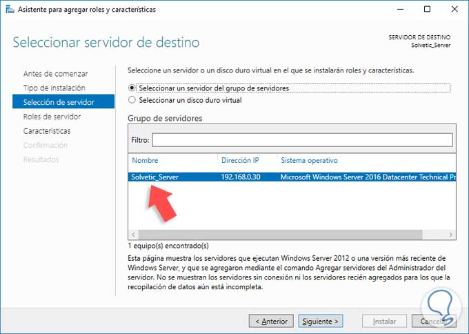Pulsamos de nuevo Siguiente y en la siguiente ventana seleccionamos la casilla “Servicios de dominio de Active Directory”. Lo normal es también seleccionar servidor DNS y DHCP. Pero eso ya irá en gusto y necesidades de cada empresa.
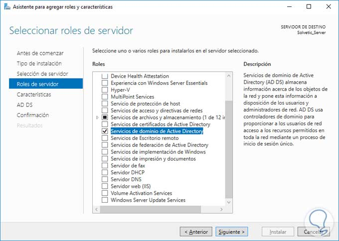Pulsamos Siguiente y en la ventana desplegada no seleccionaremos ninguna característica por lo cual pulsamos de nuevo Siguiente y veremos información asociada al rol a instalar.
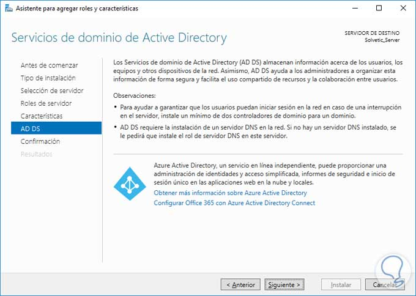Pulsamos Siguiente y veremos un resumen con el rol que será instalado en el servidor.
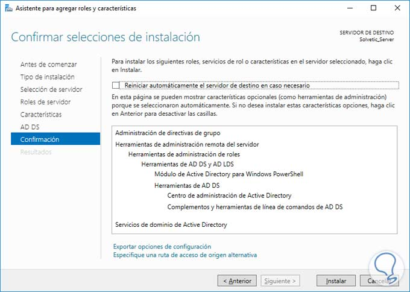Pulsamos el botón Instalar para iniciar el proceso de instalación del rol de Servicios de dominio de Active Directory. Posteriormente veremos que la instalación ha sido finalizada de manera correcta.
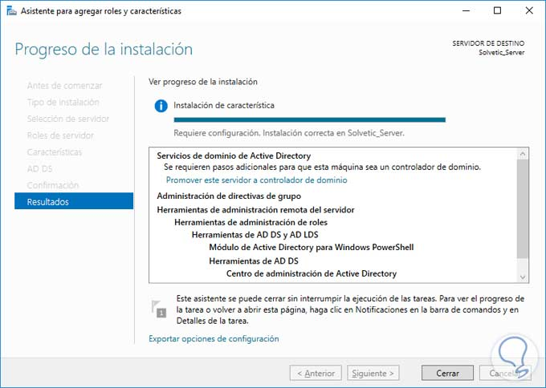Paso 3
Promover el servidor a controlador de dominio en Windows Server 2016
El siguiente paso consiste en promover el equipo para que cumpla las funciones de controlador de dominio, recordemos que el comando dcpromo ya está obsoleto por parte de Microsoft.
Cuando hemos instalado el rol anterior podemos ver una advertencia en la parte superior del administrador del servidor:
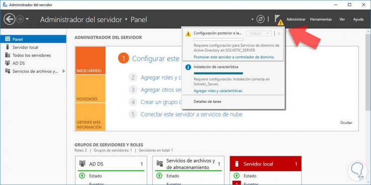Al desplegarla debemos seleccionar la opción Promover este servidor a controlador de domino y se desplegará el siguiente asistente donde lo primero que debemos definir es un nuevo bosque con el nombre de nuestro dominio, en este caso solvetic.com
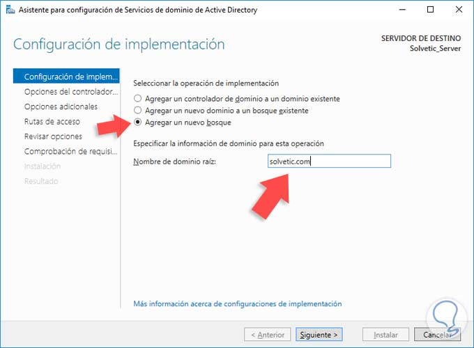Pulsamos Siguiente y en la próxima ventana debemos definir los siguientes parámetros: Nivel funcional del bosque. Nivel funcional del dominio. Definir las funciones del dominio (Ser DNS, RODC, etc). Contraseña DSRM (Esta aplica cuando debemos iniciar el directorio activo en modo de restauración.
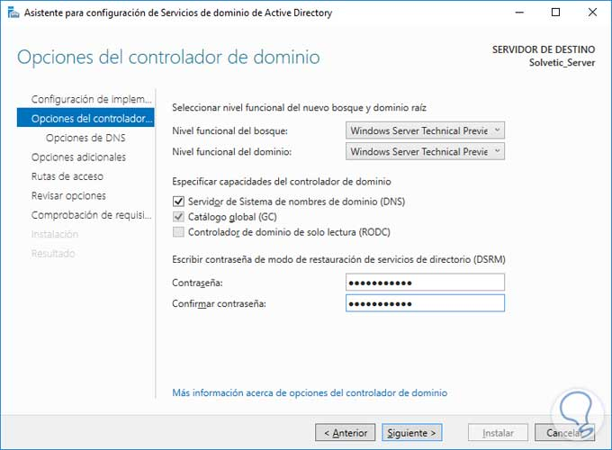Pulsamos Siguiente y en la ventana desplegada sobre la delegación del DNS podemos omitirla pulsando de nuevo Siguiente y a continuación veremos el nombre de NetBIOS del equipo.
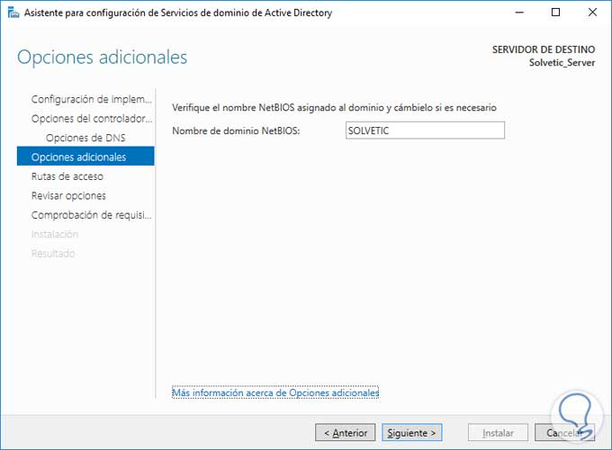De nuevo pulsamos Siguiente y veremos las rutas donde se almacenarán los archivos de registro, de sistema, etc, estos valores no es recomendable modificarlos.
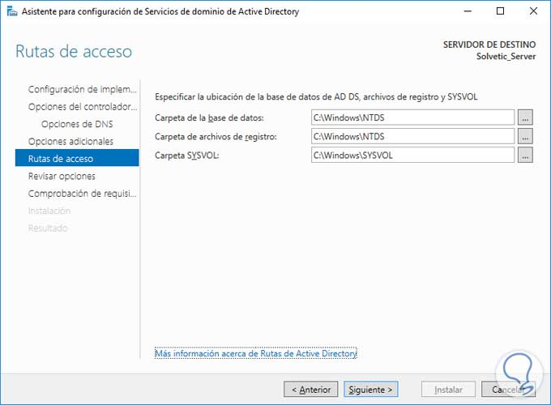Pulsamos Siguiente y veremos un resumen con las características y funcionalidades a instalar.
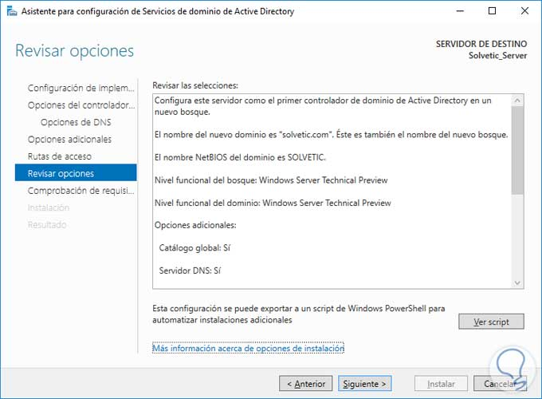Al pulsar Siguiente el sistema comprobará que todos los parámetros estén correctos para iniciar el proceso de promoción a controlador de dominio.
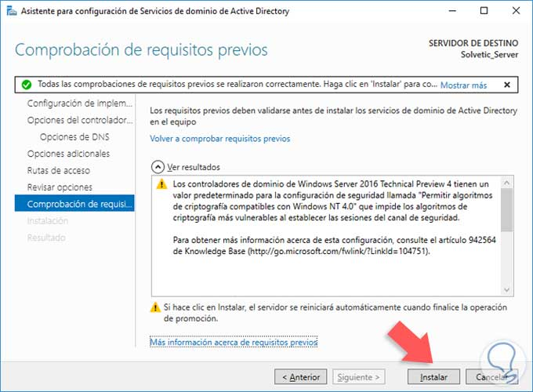Pulsamos Instalar para iniciar el proceso de promoción a controlador de dominio en Windows Server 2016. Una vez promovido el equipo debemos reiniciar el sistema para que todos los cambios surtan efecto.
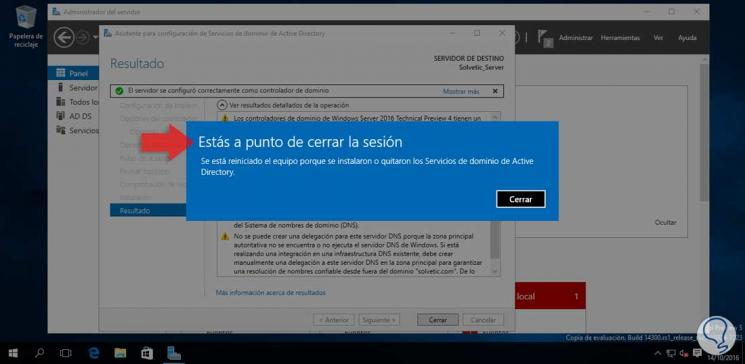Validación de que el servidor ha sido promovido a controlador de dominio. Una vez el equipo se reinicie podemos validar que todo ha sido correcto desde el inicio de sesión ya que veremos el nombre del dominio en la ventana de login:
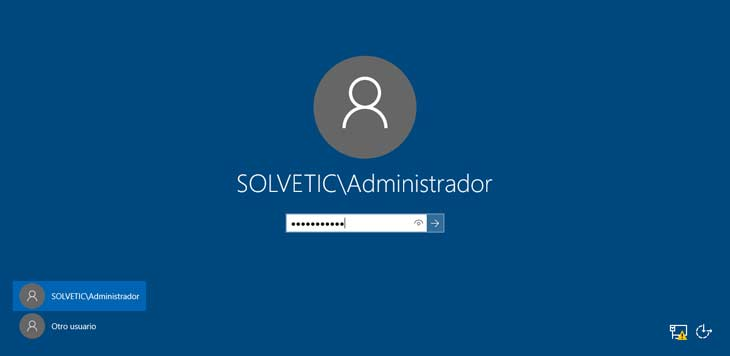Ahora en el administrador del servidor podemos ver que el equipo gestiona el dominio.
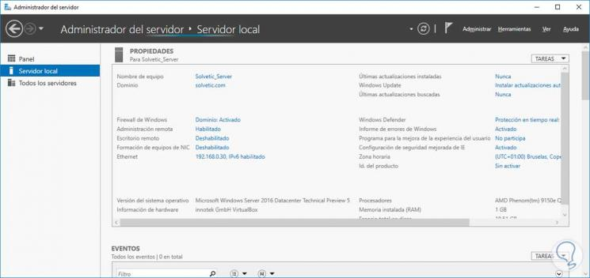Eliminacion de controlador de dominio
Eliminacion de controlador de dominio
De forma similar a como realizábamos la promoción lleva-remos a cabo la despromoción.
Iniciamos sesión como Administrador del equipo y desde Inicio > Ejecutar ejecutamos el comando dcpromo. Se nos muestra una pantalla de inicio del asistente de confi-guración de DA.
Esta indica que este controlador es un servidor de catá-logo global, es decir, que es el controlador principal del dominio y que se utiliza para que los usuarios se validen a él. Este mensaje indica la peligrosidad del proceso
Como en nuestro caso el controlador es único, en un bosque único, y no existen otros bosques, podremos realizar la operación. Pero si nuestro dominio contase con algún otro bosque, con controladores adicionales de dominio o con subdominios, no podríamos elimi-narlo. En este caso tendríamos que ir eliminando los controladores de dominio jerárquicamente de menor a mayor jerarquía.
pulsamos Aceptar y aparece una pantalla
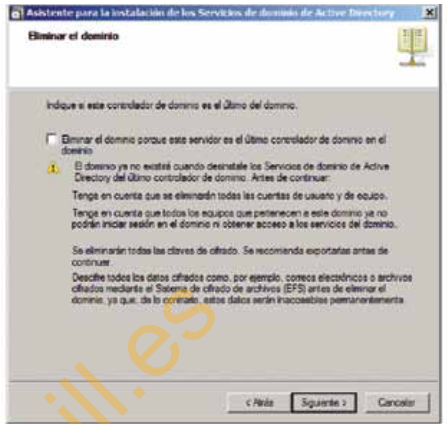En esta pantalla se nos indica que marquemos la casilla de verificación, siempre y cuando sea el último contro-lador del dominio. En nuestro caso, como es el único, evidentemente es el último, pero recordemos que si hubiera otros subdominios o controladores adicionales, no marcaríamos esta casilla para desinstalarlos
Marcada la casilla, pulsamos Siguiente y aparece una pantalla dándonos información sobre las particiones en las que se ha replicado la base de datos de DA. Pul-samos Siguiente y sale una nueva pantalla en la que indicaremos si queremos eliminar o no toda la informa-ción que las particiones de la base de datos contienen. Es conveniente eliminarlas, siempre y cuando, como es nuestro caso, el objetivo sea eliminar completamente los servicios de directorio del equipo Windows Server
Una vez marcada la casilla Eliminar todas las particio-nes, pulsamos en Siguiente. Puede ocurrir que a conti-nuación se muestre otra pantalla en la que se nos pre-gunte si queremos eliminar la configuración del servicio de DNS, que en su momento se configuró para poder utilizar los servicios de directorio
Marcamos la casilla de verificación que indica esta circuns-tancia y pulsamos Siguiente. Si se nos solicita, que es lo normal, introducimos las contraseñas del usuario Adminis-trador del equipo que utilizamos para la creación de DA
Pulsamos Siguiente en las pantallas posteriores y el pro-ceso de despromoción comienza. Pasados unos minu-tos, cuando finalice, tendremos que reiniciar el equipo o marcar la casilla Reiniciar al completar de la última pantalla que aparece
Conclusion
Este documento nos instruyo un poco en la creacion y eliminacion de un controlador de dominio, el tema mas importante fue el ver desde la perpectiva de un servidor principal como eliminar este dominio y las cosas queimplica en temas de usuarios y servidores adicionales
Referencias
Dominios y servicios de directorio (Dominio (Controlador de dominio (Enâ¦. (s. f.). Coggle. Recuperado 22 de septiembre de 2020, de https://coggle.it/diagram/WKcSIX5jXwABfxkK/t/dominios-y-servicios-de-directorio
Sistemas, S. (2019, 14 junio). Cómo crear controlador de dominio Windows Server 2016. Solvetic. https://www.solvetic.com/tutoriales/article/3187-como-crear-controlador-de-dominio-windows-server-2016/